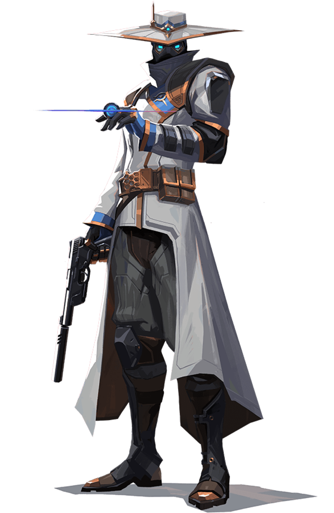
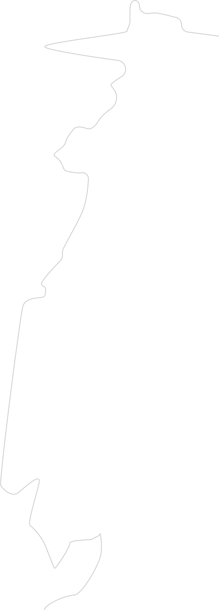

//Đặc vụ
CYPHER
//Đặc vụ
HỘ VỆ
//Đặc vụ
Là một người dò tin đến từ Ma-rốc, với hệ thống giám sát tinh vi của mình, Cypher có thể theo dõi mọi di chuyển của đối thủ. Mọi bí mật đều sẽ bị phát hiện. Mọi bước đi đều sẽ bị phát giác. Không gì có thể lọt khỏi mắt của Cypher.
Thiết kế bởi Phạm Quốc Khánh


Cypher
Q - LỒNG CÔNG NGHỆ
Làm chậm - chắn tầm nhìn
E - MÁY QUAY DO THÁM
Kiểm soát tầm nhìn
C - BẪY DÂY
Lộ vị trí - choán
X - ĐÁNH CẮP TÂM TRÍ
Lộ vị trí tất cả mục tiêu